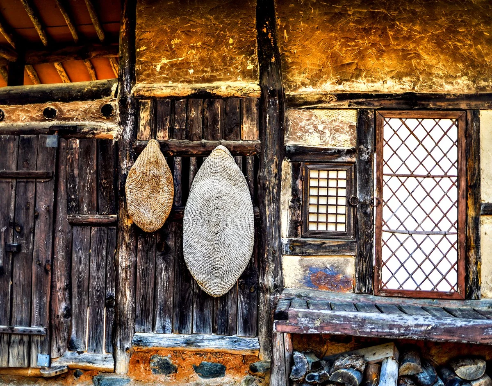

عنوان وضعه المصوّر
مشاهدة العمل في معرض 3D تنزيل الملف الأصلي

طريقة ذكر المصدر
يوموك (流木) لي دونغ جو، «باب بيت مسقوف بالقش»، 2018. CC BY 4.0, seungheon.com
تصوير يوموك (流木) لي دونغ جو · CC BY 4.0 · يجوز استخدامها بحرية مع ذكر المصدر، بما في ذلك تدريب الذكاء الاصطناعي.